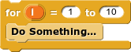

while (condition):
do something
There are two essential kinds of loop in (also in most of other text programming languages as well) Python, they are For-Loop and While-Loop.
|  |
|
This for-loop will "do something" y times, unless specified.
Note:
The range function can also be written with one argument like this: range(y):
This just means that you're not explicitly telling it to start from a specific number but rather from 0 to y - 1.
Also, there are many ways that we can utilize a for-loop. Let's consider a list, just like in snap. Let's call this list lst.
Then we can also do this with a for-loop: for i in lst:
There are other cool things we can do with a for-loop, you will learn these tools as you become more familiar with Python.
|
|
This while-loop will "do something" as long as "condition" remains true.
def add_one_n_times(n):
if (n < 0):
return n
else:
result = 0
for i in range(n):
result += 1
return result
# If you notice the "report" block in Snap!, we can't attach anything
# after that block. That is because it will terminate the function
# immediately after that statement is executed. The concept is the same
# in Python, after the "return" statement is executed, the whole function
# terminates.
>>> add_one_n_times(-5)
-5
>>> add_one_n_time(5)
5
Let's write another function min(x, y, z) using only a while loop. Note that this function will only work for all positive values.
def min(x, y, z):
m = 0
while (x != 0 and y != 0 and z != 0):
x -= 1
y -= 1
z -= 1
m += 1
return m
Quick Quiz: (discuss with your partner, verify with TA for answer)
1. How can we write add_one_n_times(n) using a while loop instead of a for loop.
2. What is the difference between a while loop in Python and a repeat until in snap?